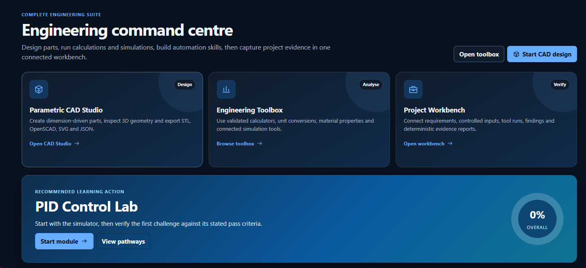

Mechatronics, Robotics, Automation and AI/ML Engineer
A complete-package engineer across physical systems, electronics, embedded firmware, controls, robotics, software, data and validation. Comfortable identifying which engineering layer a problem lives in and resolving it across whatever disciplines that takes.
Nine proof-backed records across engineering software, robotics, automation, embedded sensing, IoT, AI/ML, vehicle validation and manufacturing.
Professional delivery is separated from university and personal work, including engineering tools, and every record carries its honest evidence tier. Filter by domain or read straight through.

Personal open-source buildDelivered · project evidence
Engineering Mastery Lab
A browser-first engineering workbench combining input-validated calculators, bounded parametric CAD, eight guided learning labs and evidence-focused project workflows across web and desktop modes.
Featured · Personal buildDelivered · project evidence
Autonomous Navigation Rover on ROS 2
A complete ROS 2 Humble autonomy stack with LiDAR SLAM, A* planning, Kalman and EKF estimation and IMU-odometry fusion, validated in simulation for repeatable obstacle-aware navigation.
DomainsRobotics and autonomy · AI/ML and data · Embedded and sensing
Case study detailsProblem-to-output breakdowns for each record.
Personal open-source build · Software and engineering toolsDelivered · project evidenceEngineering Mastery Lab
Problem
Engineering learning, calculation, CAD, simulation, skills tracking and evidence workflows are often fragmented across disconnected tools and notes.
Context
A personal open-source engineering application deployed publicly through GitHub Pages. The shared React and TypeScript interface runs in the browser and in an optional Tauri 2 desktop shell. Version 0.2.0 is a functional completion candidate, not certified or production engineering software.
System architecture
A React and TypeScript frontend built with Vite and HashRouter for GitHub Pages, pure TypeScript calculation and simulation engines, a Three.js bounded parametric CAD layer, browser-local storage, and a controlled Tauri and Rust boundary for authorised local workspaces, external engineering tools and evidence capture.
Engineering decisions
Kept the browser experience local-first with no required account, backend or telemetry. Exposed governing assumptions and validation warnings instead of hiding engineering limits. Implemented bounded parametric templates rather than presenting a simplified modeller as general CAD. Kept desktop filesystem and process authority behind an allow-listed Rust boundary with workspace containment and deterministic evidence handling.
Automated Vitest suites, TypeScript checks, production builds and GitHub Actions gates, supported by rendered inspection of the deployed dashboard, toolbox, CAD and workbench routes. No engineering-standards certification is claimed.
Output
A working public web application with a browser-first engineering toolbox, bounded parametric CAD, guided learning system and evidence-focused project workflow, plus a desktop-capable source architecture.
Evidence level
Delivered, as personal project evidence. A live public build and public source repository exist. The current v0.2.0 code remains a functional completion candidate and is not claimed as certified or production engineering software.
What it demonstrates
The ability to integrate engineering-domain logic, simulation, CAD geometry, software architecture, security boundaries, validation discipline and accessible product design into one coherent engineering system.
Personal build · Robotics and autonomyDelivered · project evidenceAutonomous Navigation Rover on ROS 2
Problem
Autonomous systems need reliable localisation, mapping and obstacle-aware navigation before any of the higher-level behaviour matters.
Context
A personal robotics build developed end to end, combining simulation with physical-system thinking. Not a commercial deployment.
System architecture
Sensing and perception, LiDAR-based SLAM, Kalman and EKF state estimation with odometry and IMU fusion, A* and Nav2 path planning, motion control, and Gazebo and RViz simulation and visualisation, structured as modular ROS 2 nodes.
Engineering decisions
Built on ROS 2 Humble for a maintained long-term base; kept perception, estimation, planning and control as separate nodes so each layer could be tuned and validated independently; used simulation-first validation before physical trials.
Tools and technologies
ROS 2 Humble, Nav2, Gazebo, RViz, SLAM toolboxes, A* path planning, Kalman and EKF filters, LiDAR, IMU and odometry fusion, PID tuning.
Validation method
Repeated simulation runs in Gazebo with RViz inspection of maps, transforms and planned paths, checking localisation stability and obstacle avoidance across reruns.
Output
A working end-to-end autonomy stack with robust localisation and repeatable obstacle-aware navigation behaviour.
Evidence level
Delivered, as personal project evidence. This is a complete built stack, not a production robot fleet.
What it demonstrates
Full-stack autonomy capability: perception, state estimation, planning and control integrated and validated by one engineer.
Professional delivery · Automation and SCADADeliveredJAG Smart Factory and iFIX to PVI+ Migration
Problem
Regulated production needs traceability, diagnostics and process visibility without disturbing validated behaviour.
Context
Professional delivery at JAG Process Solutions Pty Ltd for pharmaceutical, biotech and food clients under GMP, across plants, skids and packaged units.
System architecture
Field devices and instrumentation integrated with control logic, HMI and SCADA layers, MES and batch execution, and production data flows, including an iFIX to PVI+ SCADA platform migration.
Engineering decisions
Converted SCADA application content methodically and verified functional behaviour against the existing validated system rather than trusting the conversion; prioritised diagnostics, operator usability and data integrity in every interface decision.
Tools and technologies
Siemens TIA Portal, WinCC, PCS 7, iFIX, PVI+, PLC logic (IEC 61131-3), MES and batch systems, Modbus and Profinet, GMP and GAMP 5 practice.
Validation method
FAT and SAT execution with commissioning, qualification and handover documentation, verifying migrated behaviour against the validated system.
Output
Delivered control, integration and smart-factory engineering with clearer process visibility, trends, alarms and defensible documentation.
Evidence level
Delivered, as professional work in regulated environments.
What it demonstrates
Industrial automation delivery discipline: migrating and integrating supervisory systems where validation evidence matters as much as function.
Professional delivery · Automotive and validationDeliveredFord via Invenio: ADAS and CAN Validation
Problem
Vehicle features must remain stable across variants, running changes and over-the-air software updates, with evidence to prove it.
Context
Contract placement at Ford Motor Company via Invenio, validating vehicle software integration and ADAS features across the T6 Ranger and Everest programmes.
System architecture
Instrumented test vehicles, CAN and CAN FD networks, feature software under test, and structured feature-vehicle, breadboard and regression test workflows feeding readiness milestones and sign-off evidence.
Engineering decisions
Captured bus-level evidence for every observation so defect reports stood on data rather than impressions; used structured drives to make failures reproducible before reporting them.
Tools and technologies
Vector CANoe and CANalyzer, CAN and CAN FD, vehicle instrumentation, OTA regression testing, structured test procedures.
Validation method
Feature-vehicle, breadboard and regression testing for readiness milestones and OTA updates, with CAN trace capture and analysis for fault isolation.
Output
Evidence-based defect reports and sign-off evidence supporting programme readiness decisions.
Evidence level
Delivered, as professional contract work. Always credited as Ford Motor Company via Invenio contract placement.
What it demonstrates
Cyber-physical validation skill: reading what a vehicle network is actually doing and turning it into defensible engineering evidence.
Professional delivery · Automotive and complianceDeliveredABMARC Emissions and Compliance Testing
Problem
Compliance testing requires accurate, repeatable and auditable measurements that survive regulatory scrutiny.
Context
Professional work at ABMARC, conducting vehicle emissions and compliance testing against ADR and EURO standards.
System architecture
Test instrumentation and data-acquisition systems, procedure-driven test execution, and QA and regulatory documentation workflows for certification and audits.
Engineering decisions
Treated calibration discipline and procedure fidelity as first-class engineering tasks, because the defensibility of the final report depends on them; analysed data for deviations and trends before results left the building.
Tools and technologies
Emissions test equipment, instrumentation, data-acquisition systems, ADR and EURO test procedures, QA records.
Validation method
Repeatable standard procedures with instrument calibration and cross-checking, producing auditable and technically defensible results.
Output
Defensible compliance results and structured reporting supporting certification and audit outcomes.
Evidence level
Delivered, as professional work.
What it demonstrates
Measurement and documentation rigour: the quality habits that carry into every regulated engineering environment.
Professional delivery · IoT and telemetryDeliveredDuxTel IoT Telemetry Platform
Problem
Remote assets need reliable location, environmental visibility and telemetry under low-power device constraints.
Context
Professional delivery at DuxTel Pty Ltd, covering firmware, device provisioning, telemetry dashboards and field deployment.
System architecture
ESP32 devices with GPS and environmental sensors, LoRaWAN radio networks commissioned on ChirpStack, MQTT telemetry pipelines, InfluxDB time-series storage and Grafana operational dashboards.
Engineering decisions
Used LoRaWAN for range and battery life over cellular; standardised provisioning so devices could be commissioned repeatably; separated ingestion, storage and visualisation so each layer could be maintained independently.
Tools and technologies
ESP32, GPS and environmental sensors, LoRaWAN, ChirpStack, MQTT, InfluxDB, Grafana.
Validation method
Device testing through provisioning and commissioning workflows, then field deployment with live telemetry verified end to end on dashboards.
Output
Live monitoring with mapping, trends and device telemetry delivered into operation, with documentation and handover.
Evidence level
Delivered, as professional work.
What it demonstrates
Edge-to-cloud ownership: one engineer from embedded firmware through network commissioning to the operational dashboard.
University capstone · Embedded and sensingDelivered · Honours capstoneESP32 Clinical Ataxia Assessment Device
Problem
Movement and coordination assessment benefits from repeatable, sensor-based measurement rather than observation alone.
Context
Final-year Honours capstone for the Bachelor of Mechatronics Engineering at Deakin University, completed with Distinction.
System architecture
ESP32-based sensing hardware with IMU, time-of-flight, Hall-effect and magnetometer sensors, real-time firmware for signal acquisition, and MATLAB data logging and analysis.
Engineering decisions
Chose complementary sensor modalities so movement features are captured redundantly; designed the firmware around deterministic real-time acquisition; kept analysis offline in MATLAB where clinical comparison is easier to audit.
Tools and technologies
ESP32, IMU, ToF, Hall-effect and magnetometer sensing, embedded C and C++, real-time signal acquisition, MATLAB data logging and signal processing.
Validation method
Measurement validation against clinical references, checking that captured motion signals were repeatable and comparable.
Output
A proof-of-concept measurement platform supporting repeatable motion and coordination assessment.
Evidence level
Delivered, as an assessed Honours capstone. A clinical research support concept, not a certified medical device.
What it demonstrates
Embedded hardware, firmware and measurement rigour applied to a safety-relevant sensing problem, with honest validation against references.
Personal concept · AI/ML and automationHands-on · conceptDigital Twin and Industrial AI
Problem
Factories benefit from a live, model-based view of equipment so faults are caught early and throughput and quality stay stable.
Context
A personal engineering concept that mirrors a production line in software. It draws on real smart-factory delivery experience but is not a deployment in a live plant.
System architecture
Process and equipment state modelling, simulated telemetry generation, an analytics and ML layer for anomaly detection and predictive maintenance, and dashboard visualisation with OEE reporting.
Engineering decisions
Modelled equipment states explicitly rather than learning them blind, so anomalies map to physical causes; kept the analytics layer separate from the twin so detection logic can be swapped; reported OEE the way production teams actually read it.
Tools and technologies
Python, anomaly detection and predictive-maintenance logic, AI agents, OEE analytics, dashboard visualisation.
Validation method
Exercised against simulated fault and drift scenarios to confirm anomalies are surfaced, maintenance needs are flagged and OEE responds correctly. Concept-level validation only.
Output
A working demonstration that surfaces anomalies, flags maintenance needs and reports OEE in real time.
Evidence level
Hands-on. A built personal concept, deliberately not claimed as a production deployment.
What it demonstrates
The bridge between plant-floor automation experience and applied AI/ML: knowing what a factory needs from its data before modelling it.
Professional foundation · Manufacturing and qualityDeliveredManufacturing and QA Foundation
Problem
Automation, validation and commissioning engineers are only as good as their understanding of how production floors, operators and quality systems actually behave.
Context
Six years of production and quality work from 2018 to 2024 at IDL, Carbon Revolution and Thornton Engineering Australia Pty Ltd, running alongside formal engineering study.
System architecture
High-throughput packaged production lines, an automated carbon-fibre rim layup cell, and standards-driven structural-steel and pressure-vessel fabrication, each with its own quality, traceability and documentation system.
Engineering decisions
Progressed deliberately from operating machines to leading lines and owning quality workflows; treated changeovers, first-response fixes and inspection evidence as engineering problems, not chores; learned the paperwork that makes production defensible: ITPs, MDRs, traceability records and QA sign-off.
Tools and technologies
Canning, bottling and kegging lines, automated rim layup, NDE and mechanical testing exposure, ITP and MDR documentation, drawing review, KPI tracking, Lean practice.
Validation method
Daily production KPIs, QA checks, inspection evidence and documented sign-off, including commissioning support for WestRock and Fibre King equipment during a canning line upgrade.
Output
A working production and quality instinct: line recovery, changeover logic, operator empathy and audit-ready documentation habits.
Evidence level
Delivered, as professional employment across three manufacturers. Detailed role records are in the Experience section.
What it demonstrates
The foundation under every later delivery: automation designed by someone who has run the line, fixed the jam and signed the QA record.
02Engineering Atlas
Nineteen capability domains, tiered honestly by evidence.
The full engineering landscape in one atlas: search it, filter it by domain, evidence tier or delivery context, and open any domain for subdomains, tools, proof and growth targets. Nothing is claimed beyond its evidence.
Delivered Professional or project delivery evidence exists.
Hands-on Built, tested, configured, analysed or used directly.
Working knowledge Credible study, coursework or self-directed learning.
Adjacent Transferable exposure from nearby systems.
Target Strategic growth domain.
Systems engineeringDeliveredMechatronics and Systems EngineeringThe home discipline: integrating mechanical, electrical, embedded, control and software layers into one working system, then proving it with structured test and documentation.
Subdomains
System architecture and decompositionRequirements to acceptance mappingElectromechanical integrationInterface definition between layersTrade-off analysis across disciplines
Tools and software
Block and signal-flow modellingMATLAB and SimulinkFMEAFAT and SAT structuresEngineering documentation
Project proof
The ROS 2 rover and clinical capstone both required whole-stack integration from sensing to validated behaviour.
Experience proof
Bachelor of Mechatronics Engineering (Honours, Distinction), Deakin University. Integrated deliveries at JAG Process Solutions and DuxTel spanning field devices, control logic, data flows and handover.
Transferable logic
Knowing which layer a fault or requirement lives in is the skill that moves between every domain on this page.
Growth targets
Model-based systems engineering (SysML)
Physical systemsHands-onMechanical Design, Materials and ThermofluidsHands-on CAD, mechanism and part design for mechatronic assemblies, backed by degree-level materials, thermodynamics and fluid mechanics coursework.
Subdomains
Part and assembly modellingMechanism designEngineering drawings and GD&T3D printing and prototypingMaterials selection (Working knowledge)Thermodynamics and fluid mechanics (Working knowledge)FEA (Working knowledge)
Tools and software
SolidWorksFusion 360GD&TFDM 3D printingPneumatics and hydraulics basics
Project proof
Mechanical design and CAD across university projects, the Deakin Mars Rover Team and the ESP32 capstone hardware.
Experience proof
Drawing review and fabrication QA in structural-steel and carbon-fibre manufacturing roles, including pressure-vessel CAD designs at Thornton Engineering that progressed into fabrication.
Transferable logic
Mechanism, tolerance and load thinking carries into robot hardware, fixtures, panels and production tooling.
Growth targets
Design for manufacture at production scaleFormal FEA validation workflows
Physical systemsHands-onElectrical Systems and PowerPractical motor control, drives, panel wiring and instrumentation power in industrial settings, with machine and power theory from formal study.
Subdomains
VFDs and motor drivesControl panel and schematic literacyInstrumentation wiring and loop checksSignal and power segregationElectrical machines theory (Working knowledge)Power systems and distribution (Working knowledge)
Tools and software
VFD commissioningControl schematicsMultimeter and loop testingInstrumentation datasheets
Project proof
Motor, drive and actuator integration in robotics and capstone builds.
Experience proof
Integrated field devices, sensors and drives with control logic at JAG Process Solutions. Motor and drive fundamentals from the mechatronics degree and HND.
Transferable logic
Reading a schematic and tracing a loop is the same discipline whether the cabinet runs a plant, a rig or a robot.
Growth targets
Switchboard and panel design ownershipAS/NZS 3000 wiring rules literacy
Embedded and electronicsHands-onElectronics, PCB and Board Bring-upWorking capability from schematic capture and PCB layout through to powering up, debugging and validating real boards.
Subdomains
Schematic capturePCB layoutBoard-level bring-up and debugSensor interfacing and signal conditioningAnalog front-end design (Working knowledge)EMC and EMI awareness (Working knowledge)
Tools and software
AltiumKiCadOscilloscope and logic analyser useADC, PWM, level shiftingSignal conditioning
Project proof
Designed and brought up sensor boards for the ESP32 clinical capstone and personal robotics and IoT builds, including IMU, ToF, Hall-effect and magnetometer front ends.
Experience proof
Sensor and instrumentation interfacing carried into professional IoT device work at DuxTel.
Transferable logic
Clean sensing and grounding habits underpin reliable data in every downstream control, telemetry and ML layer.
Embedded and electronicsDeliveredEmbedded Systems and FirmwareMicrocontroller firmware in C and C++ on ESP32 and STM32, from register-level peripherals and RTOS tasks to provisioning and field deployment.
Subdomains
Embedded C and C++RTOS task design (FreeRTOS)Peripheral drivers: UART, I2C, SPI, CAN, ADC, PWMLow-power and battery-aware designDevice provisioning and field deploymentBootloaders and OTA firmware update (Working knowledge)
Tools and software
ESP32 and ESP32-S3STM32FreeRTOSPlatformIO and vendor toolchainsSerial debugging
Delivered ESP32 GPS and environmental-sensing firmware, provisioning and deployment at DuxTel.
Transferable logic
Real-time constraints, interrupt discipline and driver structure transfer directly into robotics, automotive and instrumentation work.
Growth targets
Functional-safety-rated firmware practicesRust for embedded
Controls and roboticsDeliveredControl SystemsFeedback control from classical PID and loop tuning in delivered PLC logic through to state estimation and model-based design from degree and project work.
Subdomains
PID design and tuningProcess control loopsMotion control basicsKalman and EKF state estimation (Hands-on)System modelling and simulation (Hands-on)Modern and optimal control theory (Working knowledge)
Tools and software
MATLAB and SimulinkPID tuning in PLC and firmwareKalman and EKF filtersSimulation-first validation
Project proof
Kalman and EKF estimation and PID motion control built into the ROS 2 rover project.
Experience proof
Control logic delivered for pharmaceutical, biotech and food plants at JAG Process Solutions.
Transferable logic
A control loop is a control loop: the same stability and disturbance thinking applies to a dosing skid, a wheel motor or a thermal chamber.
Growth targets
Model predictive control in productionFormal control-loop performance auditing
Controls and roboticsDeliveredIndustrial Automation, PLC and SCADAProfessional delivery of PLC, HMI, SCADA, MES and batch systems for regulated plants, including a full SCADA platform migration verified against the validated system.
Subdomains
PLC programming (IEC 61131-3)HMI and SCADA engineeringMES and batch executionSCADA platform migrationIndustrial networks: Modbus, ProfinetFAT, SAT and commissioning
Tools and software
Siemens TIA PortalWinCCPCS 7iFIXPVI+Modbus TCP/RTUProfinet
Executed an iFIX to PVI+ SCADA migration at JAG Process Solutions, converting application content and verifying functional behaviour against the validated system, with FAT, SAT, commissioning and qualification documentation.
Transferable logic
Alarm philosophy, operator usability and data integrity habits carry into every supervisory and telemetry system.
Growth targets
Allen-Bradley and Rockwell platformsIgnition SCADA
Controls and roboticsDelivered · project deliveryRobotics and AutonomyA complete ROS 2 autonomy stack built and validated as a personal and university project: perception, SLAM, state estimation, planning, control and simulation.
Subdomains
ROS 2 architecture and nodesSLAM and localisationPath planning (A*, Nav2)Manipulation basics (MoveIt 2)Sensor fusion: LiDAR, IMU, odometryKinematics and dynamicsSimulation-based validation
Autonomy is systems engineering at speed: timing, transforms and failure handling sharpen every other integration discipline.
Growth targets
Commercial robot deployment and fleet operationsLearning-based perception in production
Software and intelligenceHands-onAI, ML and Data ScienceApplied machine learning where it earns its keep: anomaly detection, predictive-maintenance logic, computer vision and time-series analytics wired into real telemetry.
Subdomains
Anomaly detectionPredictive maintenance conceptsTime-series analytics and OEEComputer vision (OpenCV, YOLO)Feature extraction and statistical modellingDeep learning model training at scale (Working knowledge)
Tools and software
Python: NumPy, Pandas, scikit-learnOpenCV and YOLOMATLABInfluxDBGrafana
Project proof
Built anomaly detection, predictive-maintenance logic and OEE analytics into the digital-twin concept. Vision and estimation work in the ROS 2 rover.
Experience proof
ML-driven monitoring applied to IoT sensor pipelines delivered at DuxTel.
Transferable logic
Knowing the physics behind the signal makes the models honest: sensor-aware ML beats black-box ML in engineering settings.
Growth targets
Production MLOpsEdge inference on embedded targets
Software and intelligenceHands-onSoftware Engineering and DevOpsPractical software across Python, C, C++, JavaScript and TypeScript with Linux, Git, REST APIs, databases and test automation, including a deployed club website.
Subdomains
Python and C/C++ developmentREST APIs and integrationLinux and scriptingVersion control and CI workflowsTest automationWeb systems (Next.js, Supabase)Databases and time-series stores
Tools and software
PythonC and C++JavaScript and TypeScriptNode.jsGitLinuxJIRAInfluxDB
Project proof
Built and runs the Newcomb and District Cricket Club website on Next.js and Supabase, plus this portfolio.
Experience proof
Test automation and CI workflows in professional validation roles.
Transferable logic
Clean interfaces, version discipline and automated checks are the connective tissue between every engineering domain here.
Growth targets
Cloud architecture certificationContainerised deployment at scale
Software and intelligenceDeliveredIoT and Edge-to-Cloud TelemetryProfessional end-to-end IoT delivery: embedded sensing devices, LoRaWAN networks, MQTT brokers, time-series storage and live operational dashboards.
Subdomains
Low-power device designLoRaWAN networks and provisioningMQTT and telemetry pipelinesGateways and edge devicesTime-series storage and dashboardsField deployment and support
Tools and software
ESP32LoRaWANChirpStackMQTTInfluxDBGrafanaGPS and environmental sensors
Designed and deployed end-to-end IoT systems at DuxTel, commissioning devices onto ChirpStack LoRaWAN networks through to dashboards and handover.
Transferable logic
Edge-to-cloud thinking scales from a paddock sensor to a plant historian: the same ingestion, buffering and visualisation logic applies.
Growth targets
Industrial IoT at plant scale (OPC UA)Cellular and satellite backhaul systems
SectorsDeliveredAutomotive Systems and ValidationProfessional vehicle software and ADAS validation on major OEM programmes, plus regulated emissions and compliance testing, grounded in CAN-level evidence.
Subdomains
CAN and CAN FD analysisADAS feature validationOTA update regression testingVehicle instrumentationEmissions and compliance testing (ADR, EURO)Fault isolation and defect evidenceEV and HEV architectures (Working knowledge)
Tools and software
Vector CANoeVector CANalyzerData-acquisition systemsEmissions instrumentationStructured test procedures
Validated vehicle software and ADAS features across the T6 Ranger and Everest programmes at Ford Motor Company via Invenio contract placement. Emissions and compliance testing against ADR and EURO standards at ABMARC.
Transferable logic
Evidence-first validation, from a CAN trace to a certification report, is a portable habit every regulated industry pays for.
Growth targets
AUTOSAR literacyISO 26262 functional safety
SectorsHands-onBiomedical and Clinical DevicesEmbedded clinical sensing built and validated against clinical references in an Honours capstone, with working knowledge of human-factors and device-validation concepts.
Subdomains
Embedded physiological sensingReal-time signal acquisitionMeasurement validation against referencesHuman factors and usability concepts (Working knowledge)Medical device regulation awareness (Working knowledge)
Tools and software
ESP32IMU, ToF, Hall-effect, magnetometer sensingMATLAB data loggingSignal processing
Assessed Honours capstone at Deakin University, graded with Distinction.
Transferable logic
Clinical work forces measurement rigour, repeatability and documentation discipline that generalises to any safety-relevant sensing.
Growth targets
IEC 62304 software lifecycleClinical trial support engineering
SectorsDeliveredManufacturing, Production and QualityYears on real production floors across food and beverage, carbon-fibre and structural-steel manufacturing: operations, QA, traceability and disciplined documentation.
Subdomains
Production operationsQA records, ITPs and MDRsMaterial traceabilityEngineering-drawing reviewInspection planningLean and continuous improvement
Tools and software
ITP and MDR documentationFMEALean Six Sigma FoundationKAIZENTraceability systems
Manufacturing, QA and documentation roles at IDL, Carbon Revolution and Thornton Engineering from 2018 to 2024, spanning food and beverage, carbon-fibre and structural-steel production.
Transferable logic
Floor-level empathy for operators and inspectors makes automation, HMI and MES design markedly better.
Growth targets
Six Sigma Green BeltProduction line ownership
SectorsDeliveredProcess, Pharma and Regulated ManufacturingSmart-factory and control engineering delivered for pharmaceutical, biotech and food clients under GMP, with GAMP 5 validation discipline through to qualification and handover.
Subdomains
GMP working practicesGAMP 5 validation lifecycleBatch systems and executionProcess visualisationQualification and handover documentationP&ID and process design literacy (Working knowledge)
Delivered control, integration and smart-factory engineering for pharmaceutical, biotech and food clients under GMP at JAG Process Solutions, across plants, skids and packaged units.
Transferable logic
If it is not documented, it did not happen: regulated-industry discipline raises the quality bar in every other sector.
Growth targets
CQV engineering rolesProcess engineering depth in pharma
SectorsAdjacentCivil, Structural and Infrastructure AwarenessTransferable exposure from structural-steel fabrication QA: reading structural drawings, weld and inspection documentation, and standards-driven fabrication workflows.
Engineering drawingsITPs and MDRsMaterial traceability records
Project proof
Pressure-vessel CAD designs that progressed into fabrication.
Experience proof
QA, drawing review and documentation work at Thornton Engineering across structural-steel fabrication projects.
Transferable logic
Standards-driven fabrication QA is a direct bridge into infrastructure, rail and energy project work.
Growth targets
Infrastructure automation and monitoring systems
SectorsAdjacentAerospace, Space, Marine, Rail, Defence, Mining, Agriculture and EnergySector adjacencies reached through rover robotics, field IoT and hands-on farm work, held honestly as adjacent exposure and strategic growth targets rather than delivery claims.
Subdomains
Space and field robotics (Mars Rover Team)Agricultural sensing and AgTechMining automation (Target)Rail systems and signalling (Target)Defence systems engineering (Target)Marine and offshore systems (Target)Energy and renewables integration (Target)
Tools and software
ROS 2 field roboticsEnvironmental and GPS telemetryRemote asset monitoring patterns
Practical agricultural experience as a farmhand alongside field IoT deployment work.
Transferable logic
Autonomy, telemetry, harsh-environment sensing and regulated validation are exactly the capabilities these sectors hire for.
Growth targets
Mining autonomy programmesDefence-adjacent autonomous systemsRenewable energy plant automation
Assurance and deliveryWorking knowledgeSafety, Reliability, Standards and Cyber-physical SecurityWorking knowledge of the machinery-safety, industrial-cybersecurity and quality standards that frame the delivered automation and validation work, applied through documentation and test practice.
Subdomains
Evidence-based test documentation (Delivered)FMEA and risk assessment (Hands-on)Machinery safety (ISO 13849)Industrial cybersecurity (IEC 62443)Computerised system validation (GAMP 5, 21 CFR Part 11)Reliability engineering methods
Tools and software
ISO 13849IEC 62443GAMP 5FDA 21 CFR Part 11IEC 61131-3FMEA
Project proof
Validation methods documented in every case study above follow the same standards-aware structure.
Experience proof
Standards applied through GMP automation delivery, FMEA and QA documentation across JAG, ABMARC and manufacturing roles.
Transferable logic
Standards literacy converts good engineering into defensible engineering: it is the language auditors and safety leads trust.
Assurance and deliveryDeliveredProject Delivery, Commissioning and HandoverTaking systems over the line: structured FAT and SAT, site commissioning, fault resolution, stakeholder communication and complete qualification and handover packages.
Subdomains
FAT and SAT executionSite commissioningQualification documentationStakeholder and client communicationFault resolution under time pressureHandover and training material
Tools and software
FAT and SAT protocolsCommissioning plansJIRA and AgileStructured reporting
Project proof
Every professional case study above ends in documented validation and handover, not just working software.
Experience proof
Produced FAT, SAT, commissioning, qualification and handover documentation at JAG Process Solutions and resolved faults raised during testing and site support. Readiness-milestone evidence at Ford via Invenio.
Transferable logic
Commissioning is where every discipline meets reality: it proves the breadth claimed everywhere else on this page.
Growth targets
Lead commissioning rolesMulti-discipline project engineering
03Systems Stack
One integrated capability, from the physical layer to the intelligence layer.
Ten layers, each exercised through real work. Select a layer to open its evidence in the Engineering Atlas.
One coherent toolchain across six engineering territories.
Anchor platforms are shown large with the context they were used in; the supporting toolset sits underneath. Everything listed is verified by the resume, a case study or a role on this page.
Robotics and autonomy
Delivered · project evidence
ROS 2 HumbleNav2MoveIt 2Gazebo
Used to build and validate the autonomous rover stack end to end.
RVizSLAMA* path planningKalman and EKFLiDARIMUDepth camerasOpenCVYOLO
Controls, automation and SCADA
Delivered · professional
Siemens TIA PortalWinCCPCS 7iFIXPVI+
GMP smart-factory delivery at JAG Process Solutions, including the iFIX to PVI+ migration.
PLC programming (IEC 61131-3)HMI and SCADAMES and batch systemsModbusProfinetVFDs and drivesGMPGAMP 5FAT and SAT
Embedded and electronics
Delivered · firmware
ESP32 and ESP32-S3STM32FreeRTOSAltiumKiCad
Firmware delivered professionally at DuxTel; PCB design and bring-up across capstone and personal builds.
Embedded C and C++UARTI2CSPICANADCPWMSignal conditioningBoard bring-up
Software, data and AI/ML
Hands-on
PythonC and C++MATLAB and SimulinkInfluxDBGrafana
Telemetry pipelines delivered at DuxTel; applied ML in the digital twin and rover projects.
ADAS and vehicle software validation at Ford via Invenio; emissions compliance at ABMARC.
CAN and CAN FDADAS validationOTA regression testingVehicle instrumentationFault isolationEmissions instrumentationData acquisition
Mechanical, hardware and delivery
Hands-on · documentation delivered
SolidWorksFusion 360
CAD across capstone, rover and pressure-vessel design work; delivery documentation across regulated roles.
Motors, drives and actuatorsSensors and instrumentation3D printingISO and IECAS/NZSADR and EUROFMEAITP and MDR documentationCommissioning and handover
05Experience
A factual record that proves systems thinking across industries.
Automation, vehicle validation, compliance testing and IoT, built on a manufacturing and QA foundation. Each role exercised a different layer of the systems stack.
Feb 2024 to Jun 2026 · Automation, validation, compliance and IoT
Recent engineering roles
Automation and Controls Engineer
JAG Process Solutions Pty Ltd
Jan 2026 to Jun 2026Delivered
Delivered control, integration and smart-factory engineering for pharmaceutical, biotech and food clients under GMP, including a full SCADA platform migration.
Capability domainsAutomation and SCADA · Controls · Regulated manufacturing · Commissioning and delivery
Representative toolsSiemens TIA Portal, WinCC, PCS 7, iFIX, PVI+, MES and batch
Role detail
What I did
Delivered automation and smart-factory engineering for pharmaceutical, biotech, food and process clients under GMP.
Worked across control logic, HMI, SCADA, MES and batch execution.
Executed an iFIX to PVI+ SCADA migration by converting application content and verifying behaviour against the existing validated system.
Produced FAT, SAT, commissioning, qualification and handover documentation.
Integrated field devices, sensors, drives and process equipment with control logic and production data flows.
Resolved faults raised during testing and site support with attention to diagnostics, safety, usability and data integrity.
Engineering relevance
Industrial automation, process control, HMI and SCADA, MES, batch systems, GMP, GAMP 5, commissioning, validation, field-device integration, production data and regulated documentation.
Transferable capability
This role ties together controls, software, process systems, operator workflows and compliance. It shows the ability to work across both the machine layer and the validation layer, which is valuable for automation, robotics, smart factory, digital twin and regulated engineering environments.
Product Development Test Engineer (Contract)
Ford Motor Company via Invenio contract placement
Oct 2025 to Jan 2026Delivered
Validated vehicle software integration and ADAS features across the T6 Ranger and Everest programmes with CAN-level evidence for readiness milestones and OTA sign-off.
Capability domainsAutomotive and validation · Embedded networks · Test engineering
Representative toolsVector CANoe, CANalyzer, CAN and CAN FD, vehicle instrumentation
Role detail
What I did
Validated vehicle software integration and ADAS features across T6 Ranger and Everest programmes.
Ran feature-vehicle, breadboard and regression testing for readiness milestones and OTA updates.
Instrumented test vehicles and conducted structured test drives in controlled and real-world conditions.
Captured and analysed CAN bus data using Vector CANoe and CANalyzer.
Supported evidence-based defect reporting, fault isolation and verification.
Engineering relevance
Automotive validation, ADAS, vehicle networks, CAN, CAN FD, test procedures, regression testing, OTA validation, instrumentation, diagnostics and evidence-based engineering.
Transferable capability
This role connects embedded systems, vehicle behaviour, test engineering and fault evidence. It strengthens the ability to validate cyber-physical systems where software, sensors, networks, control logic and real-world operation interact.
Technical Assistant
ABMARC
Jul 2024 to Aug 2025Delivered
Conducted vehicle emissions and compliance testing against ADR and EURO standards, producing repeatable, auditable and technically defensible results.
Capability domainsAutomotive and compliance · Instrumentation and DAQ · Quality and reporting
Representative toolsEmissions instrumentation, data-acquisition systems, QA records
Role detail
What I did
Supported vehicle emissions and compliance testing against ADR and EURO standards.
Operated test equipment, instrumentation and data-acquisition systems.
Followed repeatable procedures for auditable and technically defensible test results.
Prepared compliance, QA and regulatory documentation for certification, audits and reporting.
Reviewed test data to identify deviations, trends and evidence gaps.
Engineering relevance
Emissions testing, vehicle compliance, instrumentation, data acquisition, test repeatability, QA records, regulatory documentation, standards exposure and technical reporting.
Transferable capability
This role strengthened test discipline, evidence handling and systems-level thinking. It applies directly to validation roles where measurement quality, repeatability, documentation and fault interpretation matter as much as the test itself.
Consultant Engineer, IoT and Projects Administrator
DuxTel Pty Ltd
Feb 2024 to Aug 2024Delivered
Designed and deployed end-to-end IoT systems linking sensors, embedded devices, LoRaWAN gateways, cloud platforms and dashboards, through to field deployment and handover.
Capability domainsIoT and telemetry · Embedded firmware · Data and dashboards
This role bridges embedded devices, communications, cloud data and operational visibility. It supports the broader complete-package profile because it moves from sensor-level hardware through network configuration to data pipelines and user-facing dashboards.
2018 to 2024 · Manufacturing, QA and the production floor
Foundation: manufacturing, quality and production
Production Line Worker → Team Lead / Line Support → Cellar Hand
IDL
DeliveredHands-on
Food and beverage manufacturing across five production lines, with progression from line work into team lead, line support and cellar operations.
Capability domainsManufacturing and quality · Machine operations · Commissioning exposure
Started as a production line worker and progressed into a team lead and line-support role.
Supported five production lines: two canning lines, two bottling lines and one kegging line.
Supported daily production execution, changeovers, run completion, KPI tracking, quality checks and first-response machine fixes.
Took part in commissioning support for WestRock and Fibre King equipment installed during the canning line upgrade.
Moved into cellar operations to learn beverage-making processes upstream of packaging, including wine, beer, cider and other beverages.
Engineering relevance
High-throughput production systems, machine reliability, changeover logic, operator-centred workflows, packaging automation, quality assurance, traceability, commissioning exposure and process learning from raw product to finished package.
Transferable capability
This experience connects directly to automation and controls because it showed how real operators interact with machines, how small mechanical or control issues affect throughput, and why usability, changeover design, line recovery and traceable QA matter in production systems.
Automated Rim Layup Machine Operator → Quality and Development Support
Carbon Revolution
Hands-on
Advanced carbon-fibre automotive wheel manufacturing, moving from automated layup operation towards quality assurance and development support.
Capability domainsAdvanced manufacturing · Quality and inspection · Process development
Representative contextAutomated rim layup, composite production, NDE and mechanical testing
Role detail
What I did
Started as an automated rim layup machine operator.
Moved closer to quality assurance and development work around the fully automated rim layup machine.
Gained hands-on exposure to carbon-fibre manufacturing, automated layup processes, production quality, defect awareness and the practical realities of scaling advanced composite manufacturing.
Supported wider production areas including NDE and mechanical testing.
Engineering relevance
Advanced manufacturing, carbon-fibre composites, automated layup, quality assurance, NDE, mechanical testing, defect detection, production repeatability, process development and manufacturing scale-up.
Transferable capability
This role strengthened the link between automation, materials, machine behaviour and product quality. It showed how process variation, fibre placement, inspection, testing and operator feedback influence high-performance manufacturing outcomes.
Quality Assurance / Undergraduate Engineering Support
Thornton Engineering Australia Pty Ltd
DeliveredHands-on
Structural steel and pressure vessel QA in a standards-driven fabrication environment, operating as second to the QA manager.
Capability domainsQuality and documentation · Mechanical and CAD · Standards-driven delivery
Worked within the quality assurance team and operated as second to the QA manager across fabrication quality workflows.
Supported quality areas for structural-steel and pressure-vessel work.
Prepared, maintained and reviewed ITPs, MDRs, quality records and traceability documents.
Reviewed engineering drawings and specifications for inspection planning and compliance.
Helped coordinate inspection evidence, non-conformance follow-up and fabrication documentation.
Supported NDE and mechanical testing evidence workflows as part of fabrication QA and inspection support.
Signed off QA documentation within the scope given.
Developed CAD designs for pressure vessels that progressed into fabrication.
Engineering relevance
Structural steel fabrication, pressure-vessel QA, CAD, drawing review, ITPs, MDRs, material traceability, welding and fabrication documentation, NDE, mechanical testing, inspection planning, QA sign-off and standards-driven delivery.
Transferable capability
This role built the documentation and quality discipline behind engineering delivery. It connects strongly to regulated automation and commissioning work because both require clear requirements, inspection evidence, traceability, sign-offs and defensible handover documentation.
06Education, Membership and Community
Formal qualifications, professional membership and the communities around them.
Formal qualifications
Bachelor of Mechatronics Engineering (Honours) Deakin University. Graduated with Distinction, 2025. Honours capstone: ESP32 clinical ataxia assessment device.
Higher National Diploma, Mechatronics, Robotics and Automation Engineering Cardiff Metropolitan University. Awarded with Distinction, 2016.
Membership and short courses
Member, Engineers Australia
Short courses, not formal qualifications: Lean Six Sigma Foundation, JIRA and Agile, KAIZEN, Industrial Automation and IoT, AI/ML, CAD.
Community and university involvement
Secretary, Newcomb and District Cricket Club. Also built and runs the club website on Next.js and Supabase.
Deakin Mars Rover Team. Multidisciplinary student rover engineering across mechanical, electronics, control and software work.
Math Mentors. Peer mathematics mentoring: problem solving, study skills and exam preparation.
Peer Support. Helping fellow students settle in, stay connected and find the right help.
07Beyond Engineering
Away from the stack.
The week does not end at the workbench. Five things that keep it balanced.
Club cricket
Most weekends in season are spent at Newcomb and District Cricket Club, on the field and off it: Saj plays for the club and keeps it running as secretary.
Hockey
Cricket's off-season counterpart. A different field, a faster ball and the same appetite for team sport.
Long drives
The reset button: an open road, no particular hurry and somewhere new at the end of it.
Music
The soundtrack to those drives, and to most evenings besides. Good music is non-negotiable.
Robots in the garage
There is always a personal robotics or hardware build half-finished on the bench. Some of them even make it onto this page.
08Contact
Explore the engineering evidence, then start a conversation.
Open to roles across mechatronics, robotics, automation, embedded systems, controls, validation, IoT, AI/ML and smart factory engineering. The resume carries the full professional record.